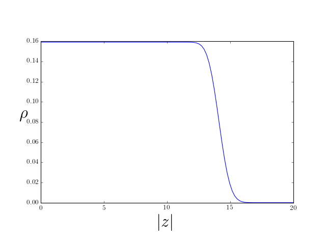
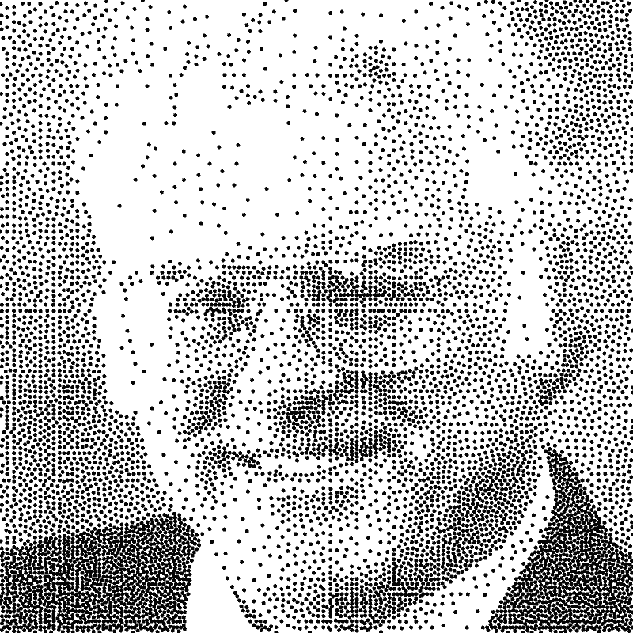

Quantum Hall effect
\[ \DeclareMathOperator{\tr}{tr} \DeclareMathOperator{\E}{\mathbb{E}} \]
The Fractional Quantum Hall Effect is one of the most remarkable phenomena in all of condensed matter physics. In the presence of a strong magnetic field, charged particles confined to move in the plane can form a series of new states of matter with bizarre properties. Fortunately, our understanding of this menagerie is based almost entirely on many body wavefunctions of a rather simple form.
The quantum Hall effect refers to quantization of the Hall conductivity \(G_{xy}= \frac{I_x}{V_y}\) into integer multiples of the conductance quantum \(e^2/h\). This phenomenon is obvserved in two dimensional electon gases at low temperatures in a strong magnetic field perpendicular to the plane. Some years after its discovery, the fractional quantum Hall effect was observed, with \(G_{xy} = \nu e^2/h\), with \(\nu\) taking simple fractional values \(\nu=1/3, 2/5\), etc..
These fractional values are only the tip of an iceberg of remarkable phenomena, indicating that the electrons are reorganizing into a bewildering variety of exotic states of matter, characterized by excitations with fractional charge and statistics outside the boson / fermion dichotomy discussed earlier. Even more surprisingly, our understanding of these phases rests largely on guessing the right wavefunction to describe these strongly interacting systems. How is such a thing possible? As we’ll see below, the wavefunction is in fact strongly constrained by the presence of the magnetic field.
Reading: Girvin (2002), Stone (1992).
1 Landau Levels
The first task is to discuss the states of a single particle of charge \(q\) in 2D in a perpendicular magnetic field. The Hamiltonian is
\[ H = -\frac{1}{2m}\left(\nabla -i q \mathbf{A}\right)^2, \tag{1}\]
where the vector potential \(A(x,y)\) obeys
\[ \partial_x A_y - \partial_y A_x = B. \]
As usual, there is some (gauge) freedom in our choice of \(\mathbf{A}\). We choose symmetric gauge
\[ A_x = -\frac{1}{2} B y,\quad A_y = \frac{1}{2} B x. \]
Next, we introduce complex coordinates
\[ z = x + i y \quad \bar z = x - iy, \]
(The notation \(\bar z\) for the complex conjugate is neater when we need to write \(\partial_{\bar z}\) together with the derivatives
\[ \partial_z = \frac{1}{2}\left(\partial_x - i\partial_y\right) \quad \partial_{\bar z} = \frac{1}{2}\left(\partial_x + i\partial_y\right). \]
We can rewrite the Hamiltonian Equation 1 as
\[ H = -\frac{2}{m}\left(\partial_z -\frac{qB \bar z}{4}\right)\left(\partial_{\bar z} +\frac{qB z}{4}\right) + \frac{\omega_c}{2} \]
where \(\omega_c = \frac{qB}{m}\) is the cyclotron frequency. States that satisfy
\[ \left(\partial_{\bar z} +\frac{qB z}{4}\right)\psi(z,\bar z) = 0 \]
therefore have energy \(\omega_c/2\) and belong to the lowest Landau level (LLL).
Show that these states have the form \[ \psi(z,\bar z) = f(z) \exp\left(-\frac{qB}{4}\left|z\right|^2\right), \]
where \(f(z)\) is an arbitrary analytic function. Note that we are assuming that \(qB>0\). For \(qB<0\) \(z\) and \(\bar z\) are exchanged and the LLL states are antianaltyic.
You may recall that the Landau levels are highly degenerate. In symmetric gauge this degeneracy may be seen to result from our freedom to choose the coefficients of this power series, and yet the states are a very special subclass of the possible 2D wavefunctions \(\psi(z,\bar z)\).
It’s often convenient to work with the analytic part \(f(z)\) of the wavefunction, with the understanding that the inner product \(\langle{f_1}\rvert f_2\rangle\) is \[ \label{eq:fb} \langle{f_1}\rvert f_2\rangle = \int \frac{d^2z}{2\pi} \overline{f_1(z)}f_2(z) \exp\left(-\left|z\right|^2/2\right), \] (Note that \(d^2z=dx dy\): our wavefunctions live in 2D) where we have chosen units in which the magnetic length \(\ell \equiv (qB)^{-1/2}\) is one. The physical meaning of this length scale is that an area \(2\pi \ell^2\) contains one flux quantum \(\Phi_0 = h/q=2\pi/q\).
A possible orthonormal basis is \[ f_n(z) = \frac{z^n}{\sqrt{2^n n!}}. \]
The Hilbert space of analytic functions is known as Segal–Bargmann–Fock space.
2 Filled LLL of Fermions
Let’s imagine filling the LLL with fermions. As it stands, there’s no principle to suggest how we do this, as all the states are degenerate. We can lift that degeneracy by adding a rotationally symmetric harmonic potential \[ V_\text{harm}(x,y) = \frac{v}{2}\left(x^2+y^2\right) = \frac{v}{2}\left|z\right|^2. \tag{2}\] When this potential acts on a state in the LLL, the result is not a LLL state because of the appearance of \(\bar z\) in \(V\). Let’s suppose that the cyclotron energy \(\omega_c\) that gives the spacing between Landau levels is the largest energy scale in the problem. Then we should consider only the action of \(V\) in the LLL subspace.
By considering matrix elements \(\langle{f_1}\rvert V\lvert{f_2}\rangle\) between LLL states, show (by integrating by parts) that it is possible to replace any occurrence of \(\bar z\) in \(V\) with \(2\partial_z\) acting on the analytic part of the wavefunction.
Note that the order is important: all the \(\partial_z\) must stand to the left of the \(z\), Thus \[ V_\text{harm}\longrightarrow v\partial_z z = v\left(1+z \partial_z\right). \tag{3}\]
Applied to the basis states \(f_n(z)\), \(V\) just counts the degree: \(V_\text{harm} f_n = v(1+n)f_n\). The ground state of noninteracting fermions therefore just amounts to filling the states \(\lvert{f_n}\rangle\) from the bottom. Identical arguments to those used in discussing the Fermi gas on the ring then tell us that the ground state wavefunction of \(N\) fermions is \[ \Psi(z_1,\ldots, z_N) = \prod_{j<k}^N (z_j-z_k) \exp\left(-\frac{1}{4}\sum_{j=1}^N\left|z_j\right|^2\right) \tag{4}\]
Show that the density is \[ \rho_1(z,\bar z) = \frac{e^{-|z|^2/2}}{2\pi}\sum_{n=0}^{N-1} \frac{\left|z\right|^{2n}}{2^n n!} = \frac{1}{2\pi} \frac{\Gamma(N,|z|^2/2)}{(N-1)!}. \tag{5}\] Here \(\Gamma(s,x) = \int^\infty_x t^{s-1}e^{-t}dt\) is the incomplete gamma function.

At small \(\left\|z\right\|\), we can approximate the sum in Equation 5 by extending the upper limit to \(\infty\), and we have \(\rho_1\to \frac{1}{2\pi}\). In fact, the density is fixed at this value until we reach \(\sim\sqrt{2N}\), at which point the density falls to zero on the scale of the magnetic length.
Thus, with the potential Equation 2, the filled LLL is described by a circular droplet of fixed density \(\rho_1 = 1/(2\pi)\), consistent with one state per flux quantum, which is the known degeneracy of the LLL. This picture is in fact quite general: changing the confining potential would cause the droplet to deform, but the density to remain constant (on the macroscopic scale).
3 The Laughlin Wavefunction
The theory of the fractional quantum Hall effect begins with Robert Laughlin’s famous wavefunction Laughlin (1983) generalizing Equation 4 \[ \Psi_m(z_1,\ldots, z_N) = \prod_{j<k}^N (z_j-z_k)^{m} \exp\left(-\frac{1}{4}\sum_{j=1}^N\left|z_j\right|^2\right). \tag{6}\] For this wavefunction to describe fermions, \(m\) must be odd. Even \(m\) describes bosons. I want to emphasize first that despite the superficial similarity of Equation 4 and Equation 6, they are very different beasts. While Equation 4 is an (antisymmetric) product state Equation 6 is not, and indeed its expansion in product states is not known in general. Furthermore, the excitations formed by modifying this state have remarkable properties. As the abstract to Laughlin’s paper puts it:
This Letter presents variational ground-state and excited-state wave functions which describe the condensation of a two-dimensional electron gas into a new state of matter.
However, we’ll see that the \(m=1\) an \(m>1\) cases do have some common features. First, we should try and explain where these wavefunctions came from. Conceptually, the simplest case to discuss is that of bosons interacting via the repulsive potential \[ H_{\text{int}} = g\sum_{j<k}\delta(\mathbf{r}_j-\mathbf{r}_k),\qquad g>0 \tag{7}\] The Laughlin state Equation 6 with \(m=2\) has zero interaction energy. In fact, any state with zero interaction energy must have \(\Psi_2(z_1,\ldots, z_N)\) as a factor. But if a wavefunction has a higher degree, then in the presence of the potential Equation 3 it will have a higher energy than \(\Psi_2(z_1,\ldots, z_N)\). Thus \(\Psi_2(z_1,\ldots, z_N)\) is the ground state.
Laughlin argued that for electrons with Coulomb interaction \(\Psi_{m}(z_1,\ldots, z_N)\) with \(m\) odd is a good variational wavefunction. The fact that \((z_j-z_k)\) appears in a power higher than one means that the particles tend to stay away from each other more than in the \(m=1\) state, thus lowering their interaction.
To get more precise information about the behaviour of wavefunctions, Laughlin introduced a powerful analogy between the probability distribution \(\lvert\Psi_m(z_1,\ldots, z_N)\rvert^2\) of the particles, and the Boltzmann distribution of particles in a classical 2D plasma. Before doing that, it’s useful to actually ‘look’ at a typical configuration of particles.

The striking feature of the right hand picture is the uniformity of the particle distribution, in contrast with the sample of uncorrelated particles on the left. The plasma analogy helps us to understand this, and a lot more.
4 The Plasma Analogy
The Coulomb potential satisfies \[ \nabla^2 V = -q\delta(\mathbf{r}). \] In 2D the solution describing a point charge is \[ V_\text{point}(\mathbf{r}) = -\frac{q}{2\pi}\log\,\left|\mathbf{r}\right|, \] while a constant background charge density \(-\rho_0\) gives rise to a potential \[ V_\text{bg}(\mathbf{r}) = \frac{\rho_0}{4} \left|\mathbf{r}\right|^2. \] Thus a system of identical charges in a background charge has an overall electrostatic energy \[ V(\mathbf{r}_1,\ldots,\mathbf{r}_N) = -\frac{q^2}{2\pi} \sum_{j<k}\log\left|\mathbf{r}_j-\mathbf{r}_k\right| + \frac{q\rho_0}{4}\sum_j \left|\mathbf{r}_j\right|^2. \] Now we suppose that our plasma is at finite temperature, in which case the Boltzmann factor giving the (unnormalized) probability of finding particles at locations \(\mathbf{r}_1, \ldots, \mathbf{r}_N\) is \[ \exp[-\beta V(\mathbf{r}_1, \ldots, \mathbf{r}_N)] = \left|\Psi_m(\mathbf{r}_1, \ldots, \mathbf{r}_N)\right|^2, \] where we set \(\beta q^2/(2\pi) = 2m\) and \(\beta q\rho_0 = 2\). This observation is Laughlin’s plasma analogy. Do bear in mind that we are not talking about physical electrostatic fields – this is a mathematical identification of two probability distributions.
Of course, we still have to analyze the statistical mechanical problem, which is hard to do exactly. Since we are interested in the large \(N\) limit, we can introduce a continuum charge density \(\rho(\mathbf{r})\) and write the electrostatic energy as a functional of \(\rho(\mathbf{r})\) as \[ \beta V[\rho] = -m\int d^2\mathbf{r}\, d^2\mathbf{r}'\, \rho(\mathbf{r})\log\left|\mathbf{r}-\mathbf{r}'\right|\rho(\mathbf{r}') + \frac{1}{2}\int d^2\mathbf{r}\, \left|\mathbf{r}\right|^2\rho(\mathbf{r}).\ \]
Show that minimizing the energy with respect to \(\rho(\mathbf{r})\) – corresponding to finding the most likely configuration – leads to the condition \[ -2m\int d^2\mathbf{r}'\, \log\left|\mathbf{r}-\mathbf{r}'\right|\rho(\mathbf{r}') + \frac{1}{2}\left|\mathbf{r}\right|^2 = 0. \]
Show that applying \(\nabla^2\) to both sides gives \[ \rho(\mathbf{r}) = \frac{1}{2\pi m}. \]
On the basis of this approximation, we conclude that the density is fixed at \(1/m\) of the value we found for the \(m=1\) case, which seems reasonable. The result applies where the density is non-zero, so we get a uniform droplet as before, this time of radius \(\sqrt{2Nm}\). \(1/m\) is called the filling fraction of the state.
Although we ignored the effect of summing over all configuration of the particles in the partition function (i.e. we ignored the contribution of entropy to the free energy), it turns out that this effect can be ignored in the large \(N\) limit.
One odd thing about the above calculation is that if the charge density is uniform, how does the droplet know where to sit? The location of the origin is obviously dictated by the minimum of the quadratic term in the energy, but we could have located that anywhere in the plane and still had a uniform charge density. Cast your mind back to the old problem of a mass undergoing simple harmonic motion through a hole in the earth…

5 Fractional Charge
Laughlin also suggested wavefunctions to describe excited states of the system, the simplest being the quasihole wavefunction \[ \Psi_\text{hole}(z_1,\ldots, z_N|Z) = \left(\prod_j (Z-z_j)\right)\Psi_m(z_1,\ldots, z_N). \] In the case of the \(m=2\) state with the interaction Equation 7 discussed above, it’s clear that this state still has zero interaction energy, although the harmonic potential Equation 3 acts upon it non-trivially.
The plasma analogy allows us to see that this state describes a quasiparticle of fractional charge. The concept of a quasiparticle is one that we’ll meet repeatedly in this course. It describes a particle-like excitation of a many body system. Phonons – quantized lattice vibrations – are a kind of quasiparticle that you will have met before. In quantum field theory, particles themselves are described as quantized excitations of a system – fields that pervade spacetime – so at a formal level there is little difference between the particles of particle physics and the quasiparticles of condensed matter physics. The physical difference is that in the latter case we know what the background medium is made of!
Let’s see how the plasma picture is modified by the introduction of the quasihole. The electrostatic energy is now \[ \begin{align} V(\mathbf{r}_1, \ldots, \mathbf{r}_N)=&-\frac{q^2}{2\pi m}\sum_j \log\left|\mathbf{r}_j-\mathbf{R}\right|-\frac{q^2}{2\pi} \sum_{j<k}\log\left|\mathbf{r}_j-\mathbf{r}_k\right|\\ &+ \frac{\rho q_0}{4}\sum_j \left|\mathbf{r}_j\right|^2. \end{align} \] This is interpreted as the introduction of a charge \(q/m\) at point \(\mathbf{R} = (X, Y)\), where \(Z=X+iY\). The charges of the plasma will screen this charge, leaving a ‘hole’ in the density distribution amounting to charge \(-q/m\), corresponding to \(-1/m\) real particles. The quasiholes have fractional charge!
This means that the normalization integral is approximated by the Boltzmann weight corresponding to the interaction of this fractional charge with the background charge density \[ \int \prod_{j=1}^N d^2z_j\,\left|\Psi_\text{hole}(z_1,\ldots, z_N|Z)\right|^2 \sim\exp\left(\frac{1}{2m}\left|Z\right|^2\right), \]
6 Fractional Statistics
Consider the two quasihole wavefunction \[ \Psi_\text{2 hole}(z_1,\ldots, z_N|Z_1,Z_2) = \left(\prod_j (Z_1-z_j)(Z_2-z_j)\right)\Psi_m(z_1,\ldots, z_N). \label{many_2hole} \] The probability distribution \(\vert\Psi_\text{2 hole}(z_1,\ldots, z_N\vert Z_1,Z_2)\rvert^2\) corresponds to a Coulomb plasma with two \(1/m\) charges at the positions \(\mathbf{R}_{1,2}\). There is no interaction term between these two fixed charges, but as we have argued, each is overwhelmingly likely to be surrounded by region of depleted density amounting to \(-1/m\) of a particle. The normalization integral is then be given by the Boltzmann weight corresponding to the interaction of these two depleted regions \[ \begin{align} \int \prod_{j=1}^N &d^2z_j\,\lvert\Psi_\text{2 hole}(z_1,\ldots, z_N\vert Z_1,Z_2)\rvert^2\\ &\sim\exp\left(\frac{2}{m}\log\left|Z_1-Z_2\right|+\frac{1}{2m}\left[\left|Z_1\right|^2+\left|Z_2\right|^2\right]\right). \end{align} \] If we try to intepret this as the probability density of a two particle wavefunction, we arrive at \[ \Psi_\text{2 hole}(Z_1,Z_2) \sim \left(Z_1-Z_2\right)^{1/m} \exp\left(\frac{1}{4m}\left[\left|Z_1\right|^2+\left|Z_2\right|^2\right]\right). \]
For \(m=1\) this is an antisymmetric wavefunction, and may be interpreted as a pair of fermionic holes. For \(m>1\) the wavefunction is multi-valued, and changes by a phase \(\pi/m\) when \(Z_1\) and \(Z_2\) are exchanged. The quasiholes are anyons, particles with fractional statistics intermediate between bosons and fermions.
7 Appendix: Sampling from a complex wavefunction
Suppose we have a complex wavefunction \(\psi(\mathbf{r},t)\) that solves the Schrödinger equation
\[ i\frac{\partial\psi}{\partial t} = -\frac{1}{2m}\left(\nabla -iq\mathbf{A}\right)^2 + V(\mathbf{r})\psi(\mathbf{r},t). \]
We can write \(\psi(\mathbf{r}, t) = \exp(R(\mathbf{r}, t) + iS(\mathbf{r}, t))\), where \(S(\mathbf{r},t)\) is the phase of the wavefunction and the probability density is \(\rho=|\psi|^2 = e^{2R}\). With some massaging, we can arrive at the following equation
\[ \frac{\partial \rho}{\partial t} = \frac{1}{2m}\nabla^2\rho - \nabla\cdot\left(\mathbf{v}\rho\right) \]
with \(\mathbf{v}= \nabla R + \nabla S - q\mathbf{A}\). This is a Fokker–Planck equation describing the evolution of a probability distribution \(\rho\) due to diffusion (with diffusion constant \(D=\frac{1}{2m}\)) together with a drift velocity \(\mathbf{v}\), which depends on the amplitude, phase, and the vector potential. Although the potential \(V(\mathbf{r})\) does not appear in this equation, it determines the functions \(R\) and \(S\).
We can sample from the probability distribution \(\rho\) by simulating the stochastic differential equation for the particle’s position
\[ d\mathbf{r}_t = \sqrt{\frac{1}{m}}d\mathbf{B}_t + \mathbf{v}dt, \]
where \(\mathbf{B}_t\) is a Brownian motion. In practical terms, this means that for a small time step \(\Delta t\) we update the position as
\[ \Delta \mathbf{r}_t = \sqrt{\frac{\Delta t}{m}}(X_i, Y_i) + \mathbf{v}\Delta t, \]
where \(X_t\) and \(Y_t\) are sampled from a standard normal distribution of unit variance: \(X_t, Y_t \sim \mathcal{N}(0,1)\)
Extended to the many body case and applied to the Laughlin wavefunction Equation 6 we arrive at the drift \(\mathbf{v}_i\) of particle \(i\), written in terms of the positions \(\mathbf{r}_i = (x_i, y_i)\)
\[ \mathbf{v}_i = -\frac{1}{2}\mathbf{r}_i + \frac{1}{2} \mathbf{r}_i \times \hat{\mathbf{z}} + m \sum_{j\neq 1} \left(\frac{\mathbf{r}_i - \mathbf{r}_j - (\mathbf{r}_i - \mathbf{r}_j)\times \hat{\mathbf{z}}}{|\mathbf{r}_i-\mathbf{r}_j|^2}\right). \]
This is what I used for the Monte Carlo simulation of the Laughlin state.